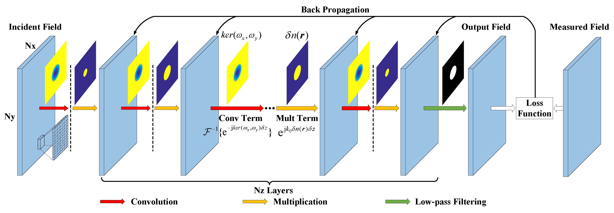
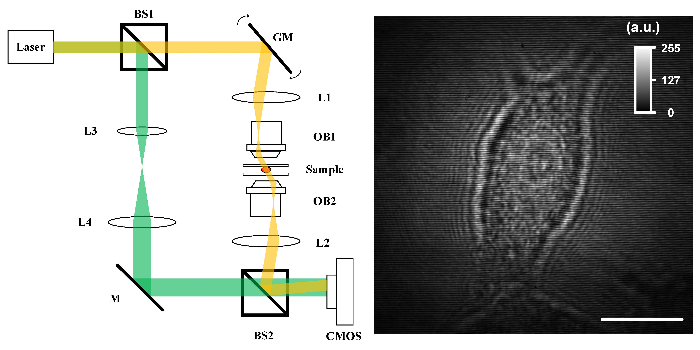
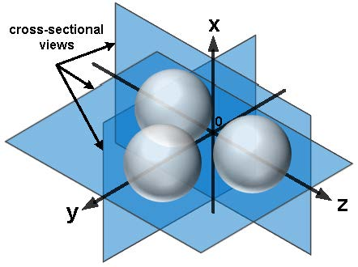
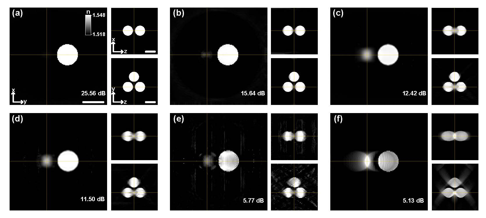
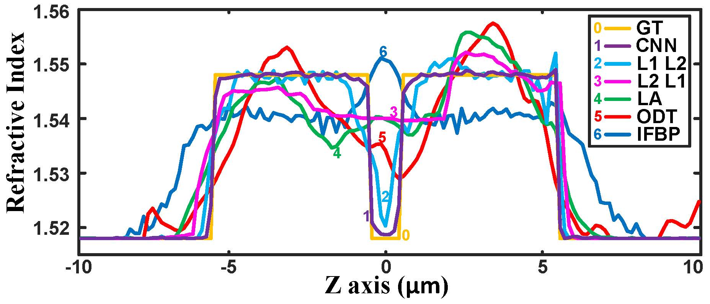
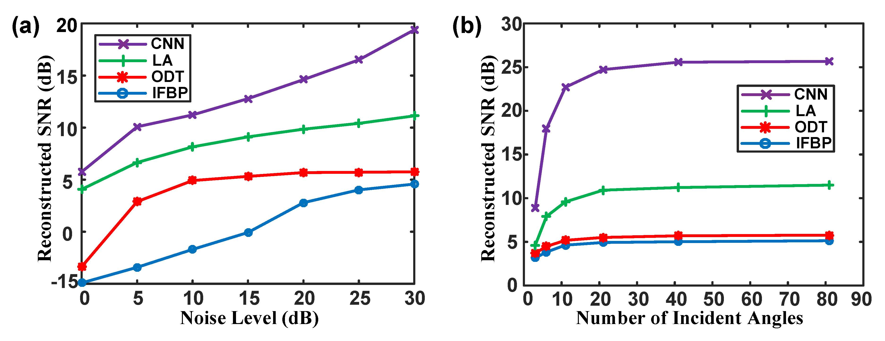
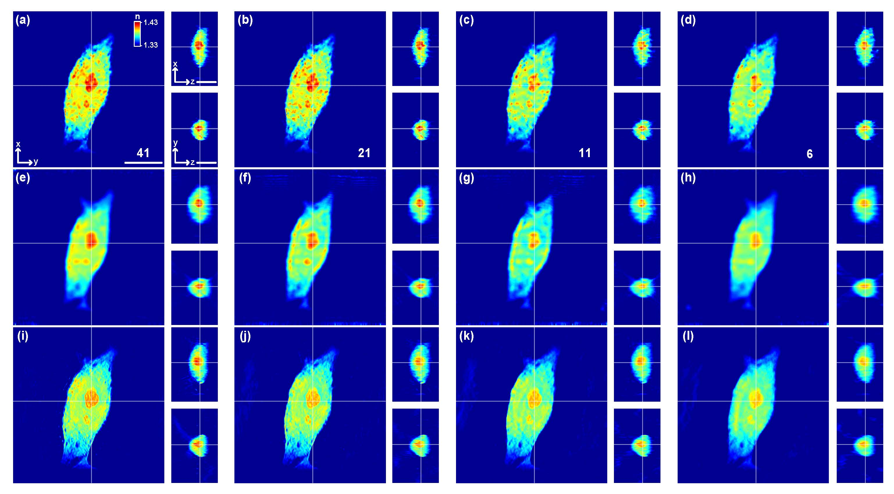
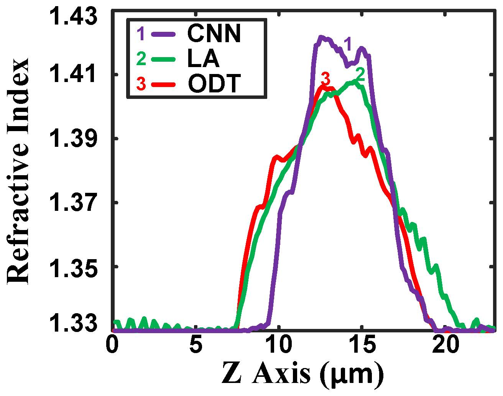
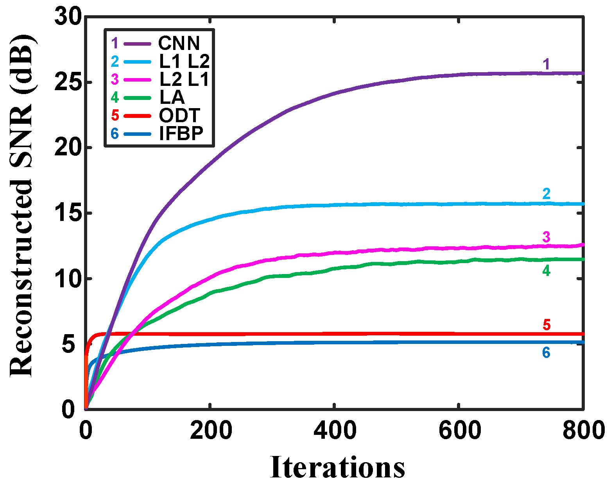
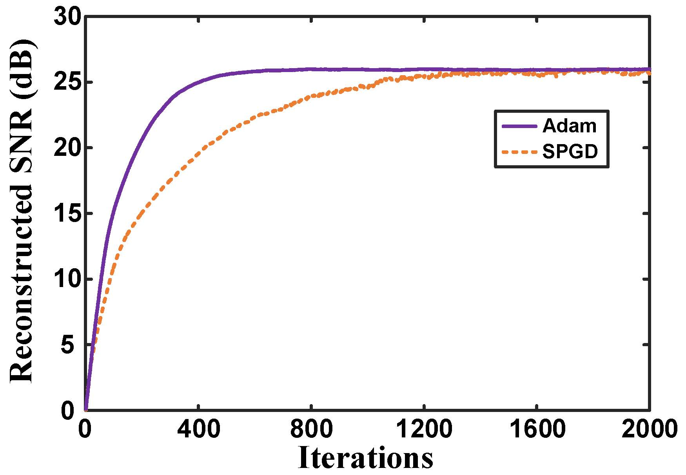

| GPU-based deep convolutional neural network for tomographic phase microscopy with l1 fitting and regularization |
Hui Qiao,1 Jiamin Wu,1 Xiaoxu Li,1 Morteza H. Shoreh,2 Jingtao Fan,1 and Qionghai Dai1,* 1Tsinghua University, Department of Automation, Beijing, China 2École Polytechnique Fédérale de Lausanne, School of Engineering, Laboratory of Optics, Lausanne, Switzerland *Corresponding author: qhdai@tsinghua.edu.cn |
|

Detailed schematic of our CNN architecture, indicating the number of layers (Nz), nodes (Nx x Ny) in each layer and operations between adjacent layers. |
Publications |
| Hui Qiao, Jiamin Wu, Xiaoxu Li, Morteza H. Shoreh, Jingtao Fan, and Qionghai Dai, GPU-based deep convolutional neural network for tomographic phase microscopy with l1 fitting and regularization, J. Biomed. Opt. (JBO), 2018, 23(6): 066003. |
Abstract |
| Tomographic phase microscopy (TPM) is a unique imaging modality to measure the three-dimensional refractive index distribution of transparent and semitransparent samples. However, the requirement of the dense sampling in a large range of incident angles restricts its temporal resolution and prevents its application in dynamic scenes. Here, we propose a graphics processing unit-based implementation of a deep convolutional neural network to improve the performance of phase tomography, especially with much fewer incident angles. As a loss function for the regularized TPM, the l1-norm sparsity constraint is introduced for both data-fidelity term and gradient-domain regularizer in the multislice beam propagation model. We compare our method with several state-of-the-art algorithms and obtain at least 14 dB improvement in signal-to-noise ratio. Experimental results on HeLa cells are also shown with different levels of data reduction. |
Files |
||||||||
Paper[pdf] |
|
|||||||
Bibtex |
@article{doi: 10.1117/1.JBO.23.6.066003, |
Additional Information |
|

Fig. 1. Experimental setup (BS, beam splitter; GM, galva mirror; L, lens; M, mirror; and OB, objective) and measured hologram by CMOS. Scale bar, 10 μm. |
|
Fig. 2. Detailed schematic of our CNN architecture, indicating the number of layers (Nz), nodes (Nx x Ny) in each layer and operations between adjacent layers. |
|

Fig. 3. Simulation geometry comprising three spherical beads with a refractive index difference of 0.03 compared with the background. |
|

Fig. 4. Reconstruction results of three 5 μm beads. Comparison of the cross-sectional slices of the 3-D refractive index distribution of the sample along the x−y, x−z, and y−z planes reconstructed by (a) proposed CNN, (b) CNN with l1 fitting, l2 regularization (L1 L2) and the regularization coefficient of 5, (c) CNN with l2 fitting, l1 regularization (L2 L1) and the regularization coefficient of 0.1, (d) learning approach implemented on the same CNN settings (LA) with the regularization coefficient of 0.6, (e) optical diffraction tomography based on the Rytov approximation (ODT) with the positivity constraint and 100 iterations, and (f) iterative reconstruction based on the filtered backprojection method with the positivity constraint and 400 iterations. Scale bar, 5 μm. |
|

Fig. 5. Comparison of the refractive index profiles along the z-axis reconstructed by different algorithms and the ground truth. |
|

Fig. 6. Performance analysis for proposed approach with the same hyperparameter selection. (a) The curve of the reconstructed SNR versus the noise level and (b) the curve of the reconstructed SNR versus the number of the incident angles. |
|

Fig. 7. Comparison of three reconstruction algorithms for various levels of data reduction on a HeLa cell. (a–d) Proposed CNN, (e–h) LA with the regularization coefficient of 1.5, (i–l) ODT with the positivity constraint and 20 iterations, (a, e, and i) 41 training data, (b, f, and j) 21 training data, (c, g, and k) 11 training data, and (d, h, and l) 6 training data. Scale bar, 10 μm. |
|

Fig. 8. Comparison of the reconstructed HeLa cell refractive index profiles along the z-axis with 41 training data. |
|

Fig. 9. Reconstructed SNR plotted as a function of the number of iterations for different reconstruction methods on simulated data. |
|

Fig. 10. Reconstructed SNR of proposed approach plotted as a function of the number of iterations for two different training optimization algorithms on simulated data with the same hyperparameters. |
Acknowlegements |
| This work was supported by the National Natural Science Foundation of China (Nos. 61327902 and 61671265). |
| BBNC Lab, Department of Automation, Tsinghua University - All rights reserved. Last updated: Mon, 06/18/2018 |